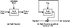

| Previous | Table of Contents | Next |
However, I donot trust this construction. It is possible to attack the hash function in a way that hash functions are not designed to withstand. It is not important for hash functions to be able to resist a chosen-plaintext attack, where a cryptanalyst chooses several of those starting 160-bit values, has them “encrypted” by the same 512-bit “key,” and uses this to learn some information about the 512-bit key used. Since the designers didnot have to worry about this, it seems like a bad idea to count on your cipher being able to resist this attack.
Security of Ciphers Based on one-Way Hash Functions
While these constructions can be secure, they depend on the choice of the underlying one-way hash function. A good one-way hash function doesnot necessarily make a secure encryption algorithm. Cryptographic requirements are different. For example, linear cryptanalysis is not a viable attack against one-way hash functions, but works against encryption algorithms. A one-way hash function such as SHA could have linear characteristics which, while not affecting its security as a one-way hash function, could make it insecure in an encryption algorithm such as MDC. I know of no cryptanalytic analysis of particular one-way hash functions as block ciphers; wait for such analysis before you trust any of them.

Figure 14.5 Message Digest Cipher (MDC).
It’s a tough decision. DES is almost certainly insecure against the major governments of the world unless you only encrypt very small chunks of data for a single key. IT’S probably all right against anyone else, but that is changing soon. Brute-force DES key search machines will quickly become economical for all sorts of organizations.
Biham’s key-dependent S-boxes for DES should be secure for at least a few years against all but the most well-funded adversaries, and possibly even from them. If you need security that lasts decades or fear the cryptanalytic efforts of major governments, use triple-DES with three independent keys.
The other algorithms arenot worthless. I like Blowfish because it is fast and I wrote it. 3-WAY looks good, and GoST is probably okay. The problem with any recommendation is that the NSA almost certainly has an array of impressive cryptanalytic techniques that are still classified, and I donot know which algorithms they can break with them. Table 14.3 gives timing measurements for some algorithms. These are meant for comparison purposes only.
My favorite algorithm is IDEA. Its 128-bit key, combined with its resistance to any public means of cryptanalysis, gives me a warm, fuzzy feeling about the algorithm. The algorithm has been analyzed by a lot of different groups, and no serious results have been announced yet. Barring extraordinary cryptanalytic news tomorrow, I am betting on IDEA today.
| Table 14.3 Encryption Speeds of Some Block Ciphers on a 33 MHz 486SX | |||
|---|---|---|---|
| Algorithm | Encryption Speed (Kilobytes/second) | Algorithm | Encryption Speed (Kilobytes/second) |
| Blowfish (12 rounds) | 182 | MDC (using MD4) | 186 |
| Blowfish (16 rounds) | 135 | MDC (using MD5) | 135 |
| Blowfish (20 rounds) | 110 | MDC (using SHA) | 23 |
| DES | 35 | NewDES | 233 |
| FEAL-8 | 300 | REDOC II | 1 |
| FEAL-16 | 161 | REDOC III | 78 |
| FEAL-32 | 91 | RC5-32/8 | 127 |
| GOST | 53 | RC5-32/12 | 86 |
| IDEA | 70 | RC5-32/16 | 65 |
| Khufu (16 rounds) | 221 | RC5-32/20 | 52 |
| Khufu (24 rounds) | 153 | SAFER (6 rounds) | 81 |
| Khufu (32 rounds) | 115 | SAFER (8 rounds) | 61 |
| Luby-Rackoff (using MD4) | 47 | SAFER (10 rounds) | 49 |
| Luby-Rackoff (using MD5) | 34 | SAFER (12 rounds) | 41 |
| Luby-Rackoff (using SHA) | 11 | 3-Way | 25 |
| Lucifer | 52 | Triple-DES | 12 |
| Previous | Table of Contents | Next |
){kind=link}
){kind=link}